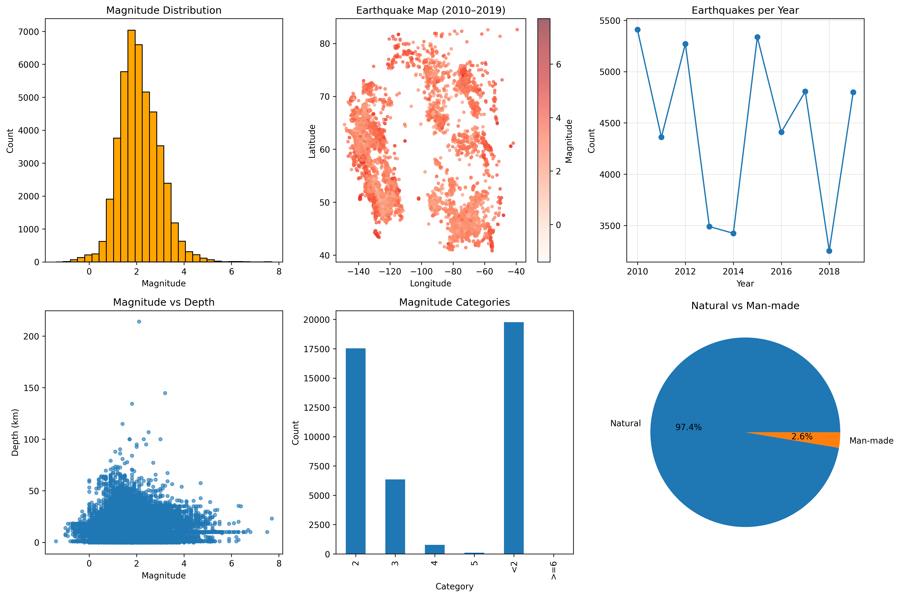

import pandas as pd
import seaborn as sns
import matplotlib.pyplot as pltIntro to EDA
Exploratory data analysis, or EDA, is a standard practice prior to any data manipulation and analysis.
Recall that data engineering is primarily about data preparation to serve smooth and effective data analysis. Exploratory data analysis generally refers to the step of understanding the data:
- summarizing characteristics of raw data
- visualizing data (single and multiple variables)
- identifying missing data
- identifying outliers
This document primarily deals with the first two items.
Goals
In the exploratory phase, these are for people behind the scenes to see.
The main goals here are:
- capture main message
- (relatively) quick exploration across many summaries (including plots)
- not intended for a client or presentation
What does this translate to, technically?
- each summary should have meaningful information
- label your plots
Data summary
As a starting point, simply looking at the data is worth the while. Some common questions to consider are the following:
- General dataset info: size, dtypes
- Missing values?
- Duplicate data?
- Continuous variables
- Categorical variables
- Bivariate relationships
- Potential data quality issues, e.g., inconsistency, special NA characters
 |
|---|
| The origin of sns. |
Earthquake dataset
# load and save a copy of the earthquake dataset
earthquake = pd.read_csv('https://raw.githubusercontent.com/mosesyhc/de300-2026wi/refs/heads/main/datasets/Canadian-Earthquakes-2010-2019.csv')# take a glimpse of the data# view a summary of the full data# checks for duplicates (also ask if duplicates make sense)# duplicates# a quick numerical summary # checks for possible statistical assumption(s)
import scipy.stats as sps# extract only numeric variables# for example, normality test# for example, another normality test# pairwise correlationData visualization
sns.set(context='talk', style='ticks') # simply for aesthetics
sns.set_palette('magma')
%matplotlib inline
# earthquake = earthquake.sample(n=500) # (if too slow) for illustration purposes# histogram for continuous variables using pandas built-in plots # relative frequency? ...# histogram of masses by group# other types of plots# counts for categorical variables# barplots by group# bivariate plots# bivariate plots (log-log)# pairwise plots (time-consuming)# another pairwise plot by groupIn-class activity
Refer to the following figure, choose two subfigures to reproduce with the earthquake dataset.

(In case you need this) Jupyter notebook setup
Visit https://docs.jupyter.org/en/latest/install/notebook-classic.html for some guidance to set up jupyter notebook.
Note: These notes are adapted from a blog post on Tom’s Blog.